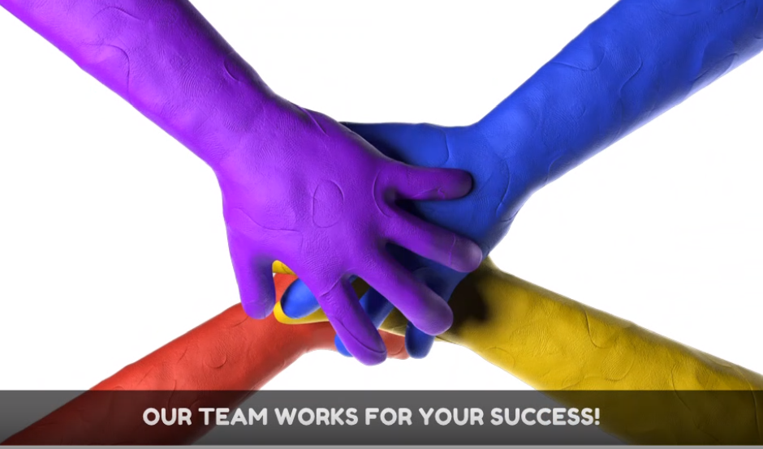

Next, Record Practice Video...
Posted on
1. Why Recording?
Next session is to record practice video. Practice video is important to document your progress and identify areas for improvement.
Posted on
Each submission is a testament to your effort!
After submission, your video will be reviewed. Submitting multiple videos provides more evidence of your practice and progress, so the more times you submit, the better.